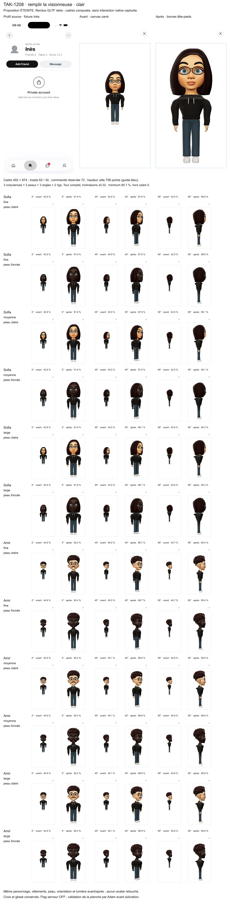
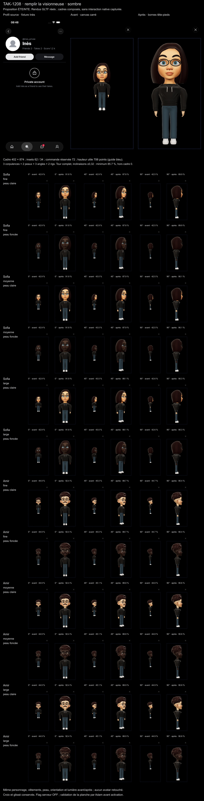

Avatar en entier, agrandi
Build 197. Le réglage est toujours éteint : rien ne change chez les testeurs tant que tu n'as pas dit oui.
1Ce qui change
Quand on ouvre l'avatar en entier, comme sur Instagram, le personnage occupait moins de la moitié de la hauteur de la visionneuse (43 à 45 %). Maintenant, il en remplit 88 à 92 %, de la tête aux pieds, avec la même marge pour tout le monde.
Sur la planche, chaque case montre « avant » à gauche et « après » à droite. On y voit 2 personnages, 3 corpulences, 2 peaux, et 3 angles (face, trois-quarts, profil). Même en le faisant tourner dans tous les sens (3 312 positions testées), il ne descend jamais sous 86 % de la hauteur, et rien ne sort du cadre.
Ce que je te demande : oui ou non pour allumer l'avatar en entier dans le 197. Si c'est non, il reste éteint, et je garde la version agrandie pour plus tard.
2Planche en clair

3Planche en sombre

TAK-1208. Rendus faits sur le Mac, sur l'app réelle et ses modèles 3D.